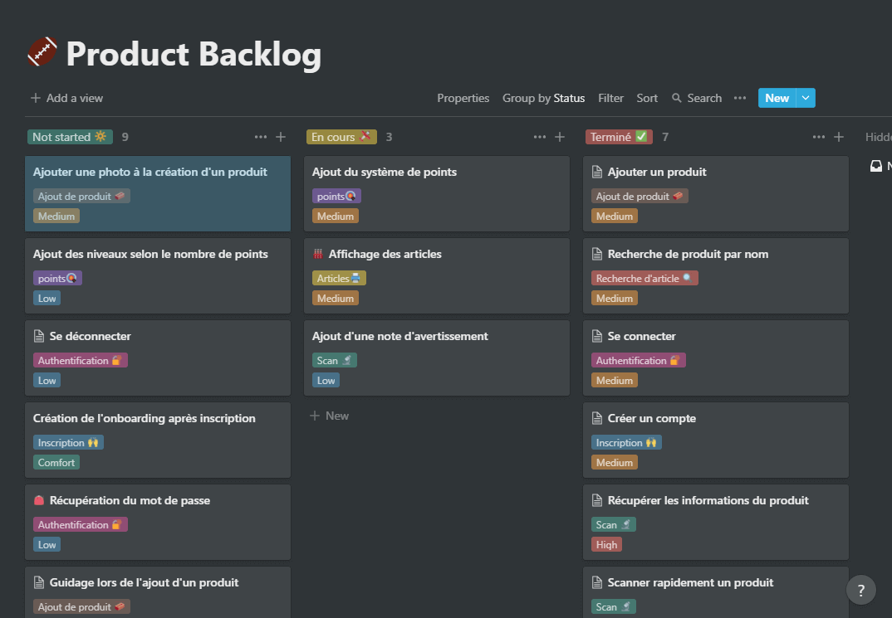

Tricycle App qu'est ce que c'est ?
C'est une application mobile fait par un groupe de 5 jeunes étudiants Nantais venant de Ynov Campus, ayant pour but d'aider n'importe qui à trier ses produits grâce à son smartphone et consulter des news positives sur l'environnement pour mettre en avant les bonnes actions faites à travers le monde.

L'application dispose avec 3 fonctionnaltiés principales:
- Le scan de produit: scannez le code barre du produit et l'application vous donnera les emplacements de tri correspondant à chaque emballage.
- la recherche de produit: recherchez parmi les produits déjà existant si le produit n'a pas de code barre.
- la consultation d'article: nous proposons des articles positifs rédigés par nous-même sur le thème de l'environnement qui permet de valoriser les bonnes actions faites à travers le monde.
Nous avons mis en ligne l'application sur le Google Playstore et l'Appstore d'Apple qui sont les canaux de téléchargements les plus répandus, qui permettront à un grand nombre de personne de pouvoir télécharger l'application.
Tricycle App: scannez et recyclez ♻ - Apps on Google Play
Les débuts de Tricycle App
Tout débute par un besoin, celui de faciliter le tri des déchets et de rendre cela accessible rapidement et facilement, une application mobile semble le support le plus adapté, un objet du quotidien qu'on peut sortir de la poche facilement pour scanner son produit.
Nous avons travaillé sur le projet durant des séances dédiées prévu par notre école pour mettre en oeuvre des projets étudiants: ce sont 12 séances de 8 h réparti sur toute l'année nous permettant de mettre en place nos projets tout en les gérant de A à Z.
Nous avons formé une équipe composé de:
- 1 Chef de projet / Designer
- 1 Développeur Back-end (Base de données et API)
- 2 Développeur Mobile/Web.
- 1 Responsable sécurité et infrastructure
Pour ma part, je me suis occupé de la gestion de l'équipe ainsi que de la direction artistique pour ce projet, étant une petite équipe nous avons des tâches diversifiées, nous permettant de voir comment produire une application mobile et la faire connaître auprès du public grâce aux réseaux sociaux et à l'image de marque.
J'ai commencé par fixer les objectifs avec toute l'équipe, pour préciser la direction que nous souhaitons prendre sur le projet.
Les objectifs
Nous nous sommes fixés des objectifs pour l'année 2020 et l'année 2021, nous permettant de fixés les points importants du projet et mesurer notre avancement.
Nous avions comme objectif de:
- Créer le système de scan des codes barres des produits et d'affichage des emplacements de tri selon leurs emballages
- La recherche de produit grâce à leurs noms ou leurs appartenance à une catégorie.
- Création des profils permettant de garder un historique des produits scannées.
- Mettre en place le système de points, selon le produit on peut recevoir plus ou moins de points et en les accumulant on peut passer des niveaux et récupérer des récompenses.
- Création d'une interface d'administration pour gérer les produits de notre base de données.
- Mettre en place une interface de rédaction d'article pour permettre aux rédacteurs d'écrire des articles consultable depuis le téléphone ou l'ordinateur grâce au site internet.
- Création d'une marque permettant d'avoir une cohérence graphique et linguistique dans la présentation du produit et les différents supports de communication.
- Lancer l'application sur le PlayStore et l'Appstore afin de pouvoir partager l'application et voir les retours utilisateurs de notre application.
Méthodologie de gestion
Pour ce projet nous sommes partis sur la méthodologie agile, nous permettant de diviser chaque séance de l'année en sprint, de placer la communication au coeur du projet, ce qui est très important au sein d'une petit équipe et nous permettant de mettre en avant la qualité plus que la quantité en prenant le temps de faire nos tâches et ainsi éviter de passer du temps sur la partie de correction de bugs..
Nous avons une routine à chaque séance qui nous permet de cadrer chaque sprint et aborder tout les changements sur le projet et permettre à toute l'équipe d'être au courant de l'avancement globale du projet et pouvoir mieux s'organiser selon la situation au moment du sprint.

Moments clés d'un sprint
- La première rétrospective permet à chaque membre de l'équipe de ce remémorer le travail qu'il à effectué lors du sprint précédent et d'évoqué les difficultés qu'il a rencontré.
- Le point global permet à tout les membres de l'équipe de visualiser où en est le projet par rapport aux objectifs et de se situer sur l'avancé du projet (proche de la fin ou non)
- Le planning du sprint permet à chaque membre de voir les tâches qui lui sont attribuées pour le sprint et de voir si des changements sont à apportés.
- La retrospective de fin de sprint sert à récapitulé tout ce qui à été produit permettant de prendre conscience de tout le travail effectué et d'avoir une meilleur vision sur la suite du projet.
Pour chaque sprint nous rédigeons un rapport afin d'avoir un historique exact de ce qu'il s'est passé précisement pendant ce sprint, j'y note les activités qui ont été réalisés, les compétences acquises et utilisés par les membres du groupe, les réussites et les difficultés et solution.

Gestion des tâches et documents
Nous avons besoin d'un espace dédié au projet qui permet de centraliser tout nos documents, gérer nos tâches, nos prises de notes et d'accéder rapidement à toutes les informations concernant le projet.
Après des recherches et des tests de différents logiciels de gestion de projet, nous sommes arrivés sur un logiciel que nous avons trouvé très complet et répondait parfaitement à nos besoins, il s'appelle Notion.
Notion - The all-in-one workspace for your notes, tasks, wikis, and databases.
Notion, c'est une application (web, desktop et mobile) permettant de prendre des notes, gérer des listes avec différentes vues (des listes, des kanbans, des timelines, des wikis, ...) ou encore des galleries, il nous permet de centraliser les documents, faire un product backlog, une roadmap et gérer les tâches de manière claire et cohérente à travers le projet et de travailler à plusieurs en temps réel sur tout nos documents.
Gestion des tâches dans Notion
Nous avons aussi la possiblité de voir toutes les tâches faites sur l'année ou de filtré à un sprint spécifique grâce à la fonctionnalité de filtre
Filtre des tâches par séances
Déroulement du projet
A travers cette partie, vous allez voir les grandes lignes du déroulement de notre projet depuis sa création jusqu'à son lancement.
Quand on commence un projet, on s'attaque d'abord à la partie conception où nous établissons les besoins et objectifs du projet, pendant cette phase nous avons crée de nombreux documents comme le cahier des charges, les schéma de base de données et de cas d'utilisations, les wireframes de l'application, etc...

Nous devions aussi trouvé les technologies adaptés à notre projet et nos compétences, nous n'avions eu que peu d'expérience dans le développement d'application mobile, il a donc été important de bien se renseigner puis de passer par une étape de formation afin de maîtriser la technologie utilisés.

Nous avons utilisé la technologie Nativescript sur notre projet afin de conserver une performance optimale grâce aux composants natif.
Pour commencer j'ai crée une roadmap qui est un document permettant de regrouper toutes les parties importantes du projet, de les priorisées et assignées, ce document montre une vision globale sur toute l'année et permet ainsi de préparer en amont ce qui est à faire en priorité.
Une partie de la Roadmap
Puis j'ai crée un product backlog permettant de faire le suivi et la priorisation des fonctionnalités de l'application et détailler le besoin utilisateur.

Product Backlog de l'application mobile
On peut voir que le product backlog contient des cartes ayant les indications suivantes:
- le nom de la User Story
- une indication de priorité
- la fonctionnalité à laquelle elle est rattaché
Chaque User Story est placé dans une catégorie qui défini son statut, les trois catégories sont: pas encore commencé, en cours ou terminé.
Cette gestion des User Story permet d'avoir un suivi de l'avancement de l'application, tout en gardant un niveau de qualité en pensant au besoin utilisateur. Je défini bien en amont les besoins afin que les développeurs sachent exactement la marche à suivre et puisse voir comment un utilisateur naviguera sur l'application.
Chaque carte ou User Story peu être ouverte pour avoir plus de détail, on y retrouve:
- une description qui défini le besoin utilisateur.
- une partie "Tests d'acception" pour définir sous quelles conditions la User Story est consideré comme complète.
- les "Tâches" regroupe les différentes tâches nécessaire à la réussite de la User Story.

Carte dans le product backlog
Les tâches elles sont répertoriés dans un autre endroit, étant donné qu'elles sont nombreuses et pars toujours en relation avec le product backlog.
Cette affichage de tâches me permet d'avoir une vision globale et de gérer mon équipe plus facilement car tout est au même endroit, elle permet aussi à chacun de voir ce que font les autres pour connaître un peu la situation et savoir à qui demander si ils ont des questions.
Gestion des tâches dans Notion
Sur chaque nous renseignons les informations suivantes:
- Le titre de la tâche
- Sa catégorie: le sujet de la tâche (développement, marketing, design, gestion de projet)
- Qui travaille sur la tâche
- Une description plus complète de la tâche
- Une date/heure de début
- Une case pour validé la tâche une fois terminé
- Une case pour dire qu'on travail dessus
Une fois la phase de réflexion et conception terminé, nous avons commencé à développer le projet avec comme partie importante:
- L'application mobile: coeur du projet, les utilisateurs passeront plus de temps sur l'application et pourront y gérer tout ce qui concerne leur compte et leur activité.
- L'administraion de produit: une interface destinée aux administrateurs permettant de créer et modifier les informations des produits.
- L'outil de rédaction d'article: une interface permettant aux rédacteurs de rédiger leurs articles et de les mettre directement en ligne une fois rédigé.
- Le serveur: permet de gérer la communication entre les données et l'application de manière sécurisé et gérer les différentes actions sur l'application et sur l'adminsitration des produits (inscription, création de produit)
- La base de données: contient les informations des produits ainsi que les données utilisateurs qui y sont sécurisées.
Nous avons priorisé le développement de chacun des solutions, l'application et le serveur étant ce qu'il fallait développé en premier.
Le développement de l'application s'est fait en suivant la priorisation faite dans le product backlog, nous permettant de correspondre au besoin utilisateur tout en ayant une vision détaillé de notre avancement.
Le serveur et la base de données ont besoin d'être accessible depuis internet afin que toutes personnes avec l'application puisse échanger des informations. Un des membres du projet est en charge du serveur et de sa sécurisation, il a mis en place de nombreuses barrières afin d'éviter les potentielles attaques et assurer la sécurité des données.
Ensuite nous avons crée une interface d'administration des produits, nous permettant de modifier les informations d'un produit comme son nom, sa catégorie ou encore les emballages qu'il possèdent.

Ensuite nous avons crée une interface pour gérer la rédaction des articles.

Pour la partie design et marketing il nous fallais crée une marque afin de garder une cohérence visuelle et de communication sur tout nos supports. Pour cela j'ai réfléchi à l'identité visuelle ce qui impacte le design de l'application mobile et du site internet.
L'identité viuelle est basé sur la positvité et la facilité, le projet tourne autour de ces 2 valeurs.
Lancement du projet
Une fois la première version de l'application développé nous pouvons la mettre en ligne afin que n'importe qui puisse la télécharger Et par la même occasion nous avons commencé à mettre en avant notre application grâce aux réseaux sociaux.
La mise en ligne de l'application se fait sur les 2 stores les plus utilisés du marché, Le Google Play Store pour les téléphones Android et L'Appstore d'Apple pour les téléphones iOS.
Tout d'abord pour chacun des stores il faut se créer un compte et payer une certaine somme afin de pouvoir soumettre son application, pour le Play Store, nou avons payer 24€ ce qui nous permet de pouvoir soumettre à vie nos applications sur le PlayStore, tandis que sur l'Appstore le prix est de 100€ pour une année.
Une fois le compte crée et la somme payé, nous avons remplis la fiche de présentation (ce que verront les utilisateurs) et répondu à des questionnaires afin que les stores vérifie que notre application respecte bien les règles (âge, contenu, données personelle partagées, etc...), à noté que nous devons obligatoirement avoir un site internet permettant de donner un lien vers les pages de politique de confidentialité et de Conditions d'utilisation.
Une fois toute ces étapes terminé, nous avons soumis l'application et au bout de 6 jours environ notre application à été validé sur les 2 stores.
Les mise à jours de notre application quant à elle n'ont besoin que de 1 journée pour être validé.
L'application est lancé, il est temps de la mettre en avant et pour cela nous avons étudier la cible de notre application pour savoir quelles canaux seront les plus pertinent pour metttre en avant notre application et nos articles.
Nous avons choisi les réseaux sociaux Twitter et Instagram, qui sont des réseaux avec des utilisateurs assez jeunes.
Etant donné que nous avons crée une marque il faut quelle soit cohérente dans sa communication a travers les différents canaux, pour cela nous avons crée un document qui décrit et uniformise la manière de communiquer sur nos articles ainsi que nos réseaux sociaux.
Conclusion
Ce projet nous as permis d'avoir une expérience sur la création d'un projet de A à Z, de la gestion de projet, de la conception de l'application et des logiciels administration, le développement des solutions, le déploiement ainsi que la mise en ligne des applications sur les Stores de Google et Apple. Nous avons mis crée une marque et fait de la communication autour de notre produit.
Ce projet m'a apporté beaucoup autant sur le plan technique avec les différentes technologies utiliséés que sur le gestion du projet avec la mise en place en concrète du product backlog et de la roadmap, sur le management d'équipe avec la gestion des différents pôles (marketing, développement, design, infrastructure).
Nous sommes fière d'avoir crée un projet comme celui-ci et d'avoir réussi à aller jusqu'au bout.